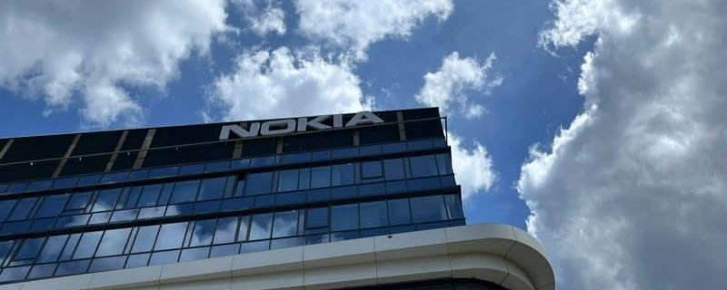

Quote
Article
Google Cloud partners with Nokia to bring Gemini AI models into telecom network management
Google Cloud and Nokia have deepened their collaboration to integrate Gemini AI models into Nokia’s telecom software stack, aiming to shift network operations toward more automated, AI-driven...
